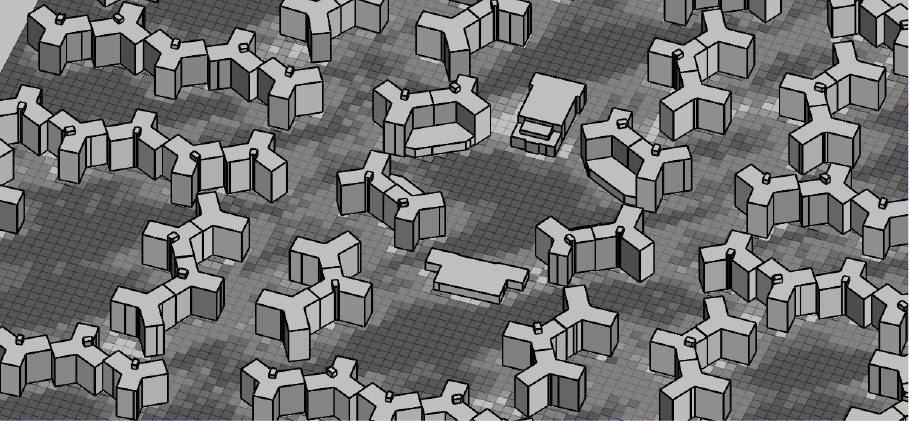

Hao's it going everyone
An analysis of a complex world system.
Systems
System A: Adaptive Reuse in Post-Industrial Zones
20240713
Elements: Factory buildings, industrial infrastructure & street grid, architects/planners, developers/stakeholders, government agencies, construction workers, communities
Interconnections: Design & construction innovations, Zoning laws, incentives, community engagement, transportation
Functions: Generate capital, historic preservation, environmental sustainability, address housing needs, generate tourism, increase property values
What dynamics are most interesting about this system? What’s most problematic?
Most interesting: How designers, developers, and communities utilize modern (or primitive) technologies to transform spaces physically and culturally.
Most problematic: A double-edged sword: although adaptive reuse begins with benign intentions such as sustainability, it often ends up skyrocketing the housing prices and drives locals away—a form of gentrification.
Whom does it impact?
Continuing from the problematic stuff, let’s first simplify the purpose of adaptive reuse in post-industrial zones, hereby referred to as 'the system,' into two outputs: address housing needs & increase property values. No matter how compassionate/malicious the initial intention might be, the system will always produce these two outputs. Like any complex system, we cannot rightfully determine whether an adaptive reuse project is “good-natured” or not, but what we can do is view the effort from a systemic perspective to perceive what crucial elements and relationships control the balance of its final output.

As for the system’s elements, there are two major players relating to the outputs: residents & capital. For the sake of analysis, we’ll be looking at just two stocks formed by these two elements. Below, we now have the industrial zone formed by a resident stock and a capital stock. (Note: the capital here is a combined concept including infrastructure, housing, land use, space potential, etc.)
Once the reuse effort begins, potential investors will gradually catch wind of the project and invest in/move into nearby properties. Here we can identify the first delay: the information lag. On the other hand, we can also map out what is influencing the residential pool: immigration and emigration.

Due to the lengthy nature of architectural and planning projects, urban revitalization would often take at least five to ten years to fundamentally affect the urban space as a whole (a massive delay! We’ll swap out the “industrial zone” for “construction/cultivation delay”.) At a certain point, the transformed urban space generates enough positive output, e.g., word of mouth, career opportunities, and incentives, the reinforcing feedback loop gradually forms and fills up the capital and the residents stocks. For this instance, as long as the capital influence (Capitalism!) of the urban transformation stays above zero, which it almost always does, the feedback loops on both ends will contribute to more incoming investors/residents and drive out original residents.

Short conclusion A: This is a very incomplete investigation into how gentrification forms and where can we differentiate our efforts from housing injustice. It does not touch on anything spatially-related, such as industrial site features, locations, transportation, etc. Short conclusion B: Should we aim for housing justice or sustainable redevelopments, we need more than capitalism to do the trick.
Rube Goldberg Machine: Unpredictable
Authorship
System: Adaptive Urbanism
Curate data literacy & cultivate urban landscapes-20240717
Through data interpretation and user vote/discussion,This practice deploys tactical installations that enable the locals to engage in their creation.
Who are the users?
- Data contributors: Provide data, discussions, and feedback to the system
- Residents: Leverage the system for informed decisions and spatial co-creation
Authorship Levels
- The Masses Author: Census data, AI as a tool than a content creation device
- The Program Author: Data interpretation, spatial curation
- The User Author: Actions guided by interpreted data, contribution to data
Responsibility & Accountability
In this system, the program and user authors are ultimately held responsible/accountable for their decisions and actions. This authorship system views data and automation software as mere tools to accelerate production rather than decision-makers. Although AI decision-making algorithms exist and are gaining traction nowadays, this system opposes that idea and believes a diluted and multi-processed information chain will lead to utterly inhuman and inhumane conclusions.
This system creates environments informed by mass data, establishing a curated platform (digital/physical) for users. The program authors are responsible for the platform’s ideation, creation, and maintenance. The user authors are held accountable for their locked-in actions under this framework.
Copyright
One of the most important parts of informing decisions is disclosing their data sources. Similar to how one would credit consultation firms in architectural projects or reference documents in bibliographies, one of this systemic practice’s aims is to gather and present the info used in decision-making.
Authorship Model Examples
Solibri utilizes AI in a controlled environment for code-checking and collaboration. The controlled environment matters a lot because its limiting nature will position AI as a tool rather than creating black boxes. It’s crucial to my practice because a core part of this system is established upon human responsibility and culpability. We use AI, or any other technologies, for that matter, as an auxiliary device for our actions.
SmartWorldOS by cityzenith allows users to build server-side and client-side Python apps for building analysis. Regarding the built environment, the users are equally important as those who designed their surroundings, if not more. Once the building has finished its construction, it’s up to the residents to carry out the architecture’s ultimate evolution or demise. Hence, this practice establishes a platform, whether digital or physical, for user participation and feedback. A platform is only successful when users can utilize it to fulfill their personal goals, rather than always thinking about the big picture. A user is just a user, and we, the program authors, need to set strict lock-in user boundaries and bring equal professionalism and humanity back to decision-making.
Adapt, Reuse internalizes the idea of its name by allowing users to submit, collect, and reuse resources. (The idea is great, but the execution, not so much.) One of the things I like about open-source projects is that they have a certain degree of “repeatability”. Actually, this sounds a bit like LEGO Ideas plus the LEGO subreddit, where users can submit and share different creations based on their unified passion for the same system. The reason many open-source projects became stagnant is because of the difficulty of replicating “projects”, whereas small and easy contributions could easily consolidate a whole system’s user base and its path forward.